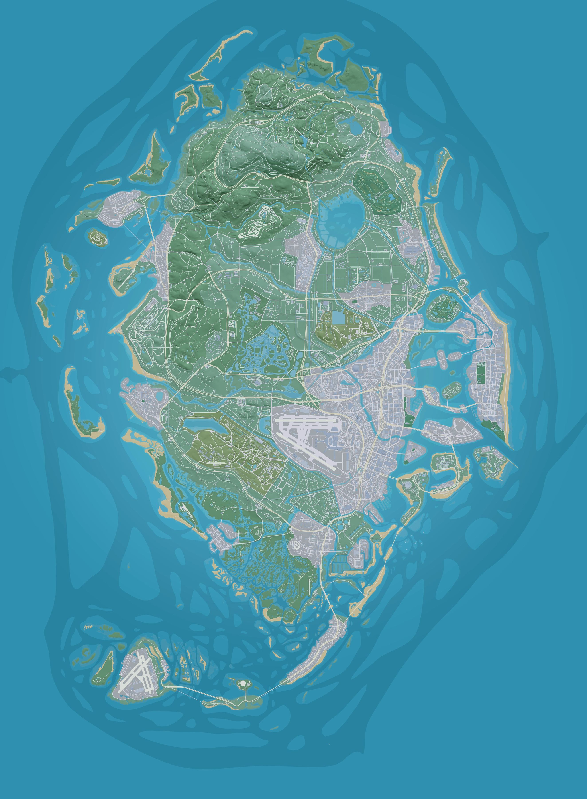

Complément
Grand Theft Auto VI — bien commencer

Jaquette © Rockstar Games. Guide non officiel.
L'essentiel
- La commande à retenir : L3 + R3 active la concentration. Elle ralentit le temps et sert dans tout le jeu.
- Ne pas rater : quatre réglages à changer avant de jouer, dont le flou cinétique à 0 et le schéma de commandes classique.
- Le système caché : la relation entre Jason et Lucia décide de la fin du jeu. Ne la néglige pas.
- Avant de partir : dépose ton argent sur BuckMe. Mourir hors mission avec du liquide sur soi, c'est le perdre définitivement.
La carte interactive
Zoome, déplace-toi et touche un repère : il t'emmène à l'endroit du guide qui en parle.

· molette ou pincement pour zoomer, glisser pour se déplacer ; touche un repère pour voir ce que c'est et ouvrir la partie du guide qui en parle.
Objectif
Te donner tout ce qu'il faut savoir avant de poser les mains sur la manette : ce qu'est le jeu, comment il fonctionne, ce qui se passe si tu joues mal les premières heures, et comment lire ce guide.
GTA VI est sorti le 19 novembre 2026. Ce guide a été écrit le 21 novembre 2026, deux jours après. Cette situation a des conséquences, et la section « Ce que ce guide sait et ne sait pas » les dit franchement.
Itinéraire
Le jeu se déroule dans l'État de Leonida, inspiré de la Floride, et il te fait déménager trois fois.
| Chapitre | Où | Qui tu joues |
|---|---|---|
| 1 — Just Like Paradise | Les Leonida Keys | Jason, puis Lucia |
| 2 — Paradise Lost | Port Gellhorn | Lucia, puis les deux |
| 3 — Tits Ass Drug Money | Vice City | Les deux |
| 4 — Vice City, Baby | Vice City, à Ocean Beach | Les deux |
| 5 — Top of the World, Ma | En fuite | Les deux |
📍 La zone en images : la carte poster officielle de Rockstar, gratuite sur son site, et la carte interactive française gta6map.io.
Déroulé pas à pas
La fiche du jeu
| Titre officiel | Grand Theft Auto VI |
| Développeur | Rockstar Games |
| Sortie | 19 novembre 2026 |
| Plateformes | PlayStation 5, Xbox Series X|S. Version PC sans date |
| Couvert ici | PS5 |
| Genre | Action-aventure en monde ouvert |
| Classification | PEGI 18 |
| Version française | Textes et sous-titres en français, voix en anglais. Aucun doublage français n'a été annoncé |
| Durée de l'histoire | 50 à 80 heures |
| Durée du 100 % | environ 200 heures |
Les cinq systèmes à comprendre
Si tu ne retiens que cinq choses de cette introduction, que ce soit celles-là.
1. La concentration
L3 + R3. Elle ralentit le temps, agrandit ta fenêtre de visée et surligne les ennemis proches même sans viser. Deux repères apparaissent sur les cibles :
- Rouge : les points vitaux.
- Jaune : les articulations. Tirer dessus désarme sans tuer.
Elle sert aussi hors combat, pour repérer des objets et des sons. La pêche est de loin la meilleure façon de la monter : 5 à 10 % par poisson (partie 16).
2. Le duo
Tu joues Jason Duval et Lucia Caminos. Le changement de personnage n'est pas libre au début : il est scripté au chapitre 1, se débloque à Pause Café au chapitre 2, et ne marche que quand les deux sont proches.
En combat, changer de personnage te donne accès aux armes de l'autre. C'est ce qui transforme une fusillade difficile en promenade (partie 18).
3. La relation
C'est le système que le jeu explique le moins et qui compte le plus. La jauge d'affinité monte par paliers, et elle décide de la fin que tu obtiens.
Elle monte avec les rendez-vous, les activités à deux, les cadeaux, les travaux de la maison, et une poignée de choix de scénario. Les icônes en forme de cœur sur la carte sont des occasions à saisir tout de suite.
4. Le profil criminel
Le jeu note ta façon de travailler, séparément pour chaque personnage, du Professionnel à l'Irrécupérable. Désarmer plutôt que tuer, viser les pneus, épargner les civils et ne pas faire de mal aux chiens le font monter.
Et comme la relation, il conditionne les deux bonnes fins du jeu (partie 13).
5. L'argent
Si tu meurs hors mission, tout ton argent liquide est définitivement perdu, et la sauvegarde automatique t'empêche d'y revenir. Dépose sur BuckMe avant chaque sortie risquée.
Au chapitre 4, tu obtiens le BuckMe Black, le compte d'Épargne familiale, plafonné à 2 000 000 $. Atteindre ce plafond est la condition de la meilleure fin du jeu (partie 20).
Les quatre réglages à changer tout de suite
Menu pause, puis Paramètres.
| Réglage | Onglet | Par défaut | À mettre |
|---|---|---|---|
| Flou cinétique | Affichage | 3 | 0 |
| Schéma de commandes | Commandes | moderne | Classique |
| Aide à la visée | Jeu | forte | réduite ou nulle |
| Unités de mesure | Interface | impérial | métrique et kilogrammes |
Le détail est dans la partie 1.
Les chiffres du jeu
| Chapitres | 5, plus un prologue |
| Missions principales | 91, pour 108 entrées numérotées |
| Fins | 5 — trois mauvaises, deux bonnes |
| Taille de la carte | environ 125 km², soit 1,7 fois Los Santos et Blaine County réunis |
| Régions | 6, sans aucun temps de chargement, réparties sur 5 comtés |
| Armes | 206, dont plus de 120 variantes uniques |
| Véhicules à scanner | 277 modèles de base, plus 280 véhicules remarquables |
| Cartes à collectionner | 480, en 18 séries |
| Cascades | 397 |
| Flamants de cocaïne | 125 |
| Animaux | 255 à étudier, pour 170 espèces |
| Contrats | 39 opérations de gang, 22 banques, 7 Payday Loans, 35 Smash 'N' Grabs, 91 Stick Ups, 8 coffres |
| Propriétés | 4 planques et 12 garages |
| Codes de triche | 61, après la fin de l'histoire |
| Trophées | 55, dont 28 cachés. Aucun en ligne |
Les personnages à connaître
| Personnage | Qui c'est |
|---|---|
| Jason Duval | Ancien militaire passé au trafic. Il espère une vie meilleure avec Lucia |
| Lucia Caminos | Elle sort de prison au début du jeu, et elle connaît le karaté |
| Tomás | Le fils de Lucia. Son sort change selon la fin |
| Brian Heder | Le propriétaire et employeur du chapitre 1 |
| Cal Hampton | L'ami complotiste de Jason, qui revient tout le jeu |
| Boobie Ike et Dre'Quan Priest | Le label de Vice City, et l'appartement du chapitre 3 |
| Raul Bautista | Le braqueur de banque qui recrute le couple |
| Valentina | La propriétaire de la suite du Y Hotel. Retiens bien son nom |
Le jargon, expliqué une fois
Le guide garde les mots que les joueurs utilisent. En voici le sens.
| Terme | Ce que ça veut dire |
|---|---|
| Loot | Tout ce qu'on ramasse : argent, armes, objets |
| Spot | Un endroit précis où quelque chose se passe ou se trouve |
| Farm | Répéter une activité pour accumuler de l'argent ou de l'expérience |
| Build | La façon dont on monte et équipe un personnage |
| Timing | Le bon moment pour appuyer |
| Switch | Le changement de personnage |
| Drive-by | Tirer depuis un véhicule en mouvement |
| Head shot | Un tir à la tête |
| Easter egg | Un clin d'œil caché par les développeurs |
En revanche, tout ce que le jeu affiche porte son nom français quand il est publié : les missions des chapitres 1 et 2, les lieux, les objets, les menus.
Les dix erreurs à éviter
- Ne se servir que d'une seule sauvegarde. Tu en as quinze, et le jeu multiplie les choix irréversibles. Garde un emplacement propre avant chaque gros moment.
- Charger le coffre d'une voiture volée. Tu finiras par la perdre, et tout l'arsenal avec. Seules tes propres voitures sont fiables.
- Enchaîner les missions principales. Plusieurs missions sont limitées dans le temps, à commencer par la sortie de Lucia au chapitre 1. Nettoie la carte tranquillement.
- Garder son argent sur soi. Mourir hors mission le fait disparaître. Et le magot sous le parquet de la maison est perdu pendant Home Sweet Home.
- Négliger la relation. C'est le système le plus discret du jeu et celui qui décide de sa fin.
- Ne jamais consulter les réseaux sociaux. Des missions secondaires entières s'y cachent. Regarde-les avant de te coucher.
- Garder le flou cinétique. Il est à 3 par défaut, il n'apporte rien ici, et il se désactive en dix secondes.
- Tirer sur les chiens. C'est le plus gros malus de profil criminel du jeu.
- Croire que tout se rattrape. Les compteurs du 100 %, oui. Mais cinq missions et une poignée d'objets uniques sont définitivement manquables (partie 21).
- Attendre la fin pour remplir l'Épargne familiale. Deux millions de dollars ne se réunissent pas en une heure, et l'argent déposé n'est pas retirable : commence dès le chapitre 4.
Quêtes et lieux
Ce que ce guide sait et ne sait pas
Le jeu a deux jours. Il faut être honnête sur ce que ça implique.
Ce qui est solide :
- La structure complète : les cinq chapitres, leurs noms, la liste ordonnée des 108 missions.
- Le détail pas à pas des chapitres 1, 2 et 3, et d'une bonne partie du 4.
- Les cinq fins et leurs conditions exactes.
- Les chiffres du 100 %, relevés compteur par compteur.
- Les 55 trophées et les 61 codes de triche avec leurs conditions.
Ce qui manque, et que le guide signale à chaque fois :
- Le déroulé d'une quinzaine de missions des chapitres 4 et 5, dont les fiches annoncent leur soluce « à venir ».
- Les noms français des missions des chapitres 3 à 5 et des 55 trophées, encore inconnus.
- 44 combinaisons de codes de triche sur 61.
- Le détail du fonctionnement de l'indice de recherche.
- Les emplacements précis des centaines d'objets de collection.
Partout où une information manque, le guide le dit et marque le passage. Il ne comble aucun trou avec du plausible.
La question des noms français
GTA VI est sous-titré en français mais joué en voix anglaises. Les menus et les titres de missions sont bien en français.
Trois cas, traités différemment dans tout le guide :
| Cas | Ce que fait le guide |
|---|---|
| Nom français publié (chapitres 1 et 2) | Le nom français, avec l'anglais entre parenthèses à sa première apparition. Exemple : Attention Indésirable (Unwanted Attention) |
| Nom français inconnu (chapitres 3 à 5, trophées) | Le nom anglais, signalé et rassemblé dans les annexes |
| La version française garde l'anglais | Écrit en anglais sans avertissement, parce que c'est ce que le jeu affiche. C'est confirmé pour Island Dreams, Feng Shui, Moses, BuckMe, Thrillbilly et Home Sweet Home |
Les noms de lieux ne se traduisent pas : la série a gardé Los Santos, Blaine County et Vinewood en version française. Le guide écrit donc Leonida, Vice City, Port Gellhorn, Ambrosia et Mount Kalaga.
Comment lire ce guide
Le guide compte 30 parties, organisées en cinq blocs.
| Parties | Contenu |
|---|---|
| 1 à 13 | L'histoire, chapitre par chapitre, dans l'ordre où tu la joues |
| 14 et 15 | La carte : l'État, puis Vice City quartier par quartier |
| 16 à 20 | Les systèmes : combat, véhicules, le duo, le téléphone, l'argent |
| 21 à 25 | Le contenu annexe : optionnelles, collections, activités, propriétés, Kenton |
| 26 à 28 | Le reste : codes de triche, 100 %, trophées |
| 99 | Les annexes : index, manquables, check-list finale |
Chaque partie commence par un encadré L'essentiel qui dit en quatre points ce qu'il ne faut pas rater. Si tu es pressé, lis-le, puis saute à la check-list de fin.
Deux symboles reviennent partout :
- ⚠️ signale un point de non-retour ou une conséquence lourde.
- signale quelque chose de manquable ou une occasion à saisir maintenant.
Ils sont utilisés avec parcimonie : s'ils étaient partout, ils ne voudraient plus rien dire.
Butin exhaustif
Ce que tu obtiens dans les toutes premières heures, et qui sert ensuite tout le jeu.
| Nom exact | Type | Où / comment l'obtenir | Utilité |
|---|---|---|---|
| La concentration | Capacité | Partie de Pêche, chapitre 1 | L3 + R3. La mécanique centrale du jeu |
| Réparation gratuite | Service | Juste une Égratignure, chapitre 1 | Une voiture neuve du même modèle, par téléphone |
| Compte BuckMe | Compte | Mission BuckMe, chapitre 1 | Mettre l'argent à l'abri de la mort |
| Détecteur de métaux et lance-harpons | Équipement | Island Dreams, chapitre 1 | La chasse au trésor sous-marine |
| Silencieux de pistolet | Accessoire | À acheter au magasin d'armes | Le meilleur investissement du chapitre 1 |
| Canne à pêche | Équipement | Dès le chapitre 1 | Monter la concentration |
| Punching-ball | Équipement | Remise sous la maison de Jason | Monter le cardio |
| Application Waink | Appli | Mission Moses, chapitre 2 | Scanner véhicules, lieux et collections |
Conseils et pièges
Ne rushe pas. Le chapitre 1 est une mise en place lente, le jeu décolle au milieu du chapitre 2, et il récompense l'exploration bien plus que la vitesse.
Tout prendre en main. Les missions secondaires ne sont presque jamais scriptées. Elles viennent des réseaux sociaux, des affiches collées aux murs, des passants qui t'interpellent et des coins reculés de la carte. Si quelqu'un te hèle, va voir.
Ouvre la liste des objectifs. Sur l'écran de carte, croix directionnelle vers la droite. Tu obtiens la liste complète des activités disponibles, parfois avec leur position. Beaucoup de joueurs ne la trouvent jamais.
Vise jaune. Désarmer plutôt que tuer ne coûte rien et protège ton profil criminel sur cinquante heures de jeu.
Pêche quand tu attends. Le jeu te fait souvent patienter plusieurs jours en jeu avant un appel. La pêche remplit ce temps et monte la statistique la plus utile du jeu.
Utilise une carte interactive. gta6map.io en français, celle d'IGN en anglais pour l'exhaustivité. Commence par Tout masquer, puis réactive un type d'icône à la fois.
Alertes
- ⚠️ Argent définitivement perdu : mourir hors mission avec du liquide sur soi.
- ⚠️ Conséquence sur la fin du jeu : la relation, les deux profils criminels et les 2 000 000 $ d'Épargne familiale décident de laquelle des cinq fins tu obtiens.
- ⏳ Cinq missions sont définitivement manquables. Le tableau complet est en partie 21.
- ⚠️ Un code de triche actif désactive les trophées et la sauvegarde pour toute la session.
- ⚠️ Missions peu connues : une quinzaine de missions des chapitres 4 et 5 n'ont pas encore de déroulé détaillé. Le guide le signale à chaque fois.
Check-list
- Flou cinétique mis à 0
- Schéma de commandes passé en classique
- Aide à la visée réduite
- Unités de mesure en métrique
- Onglet Interface parcouru
- Commande de la concentration retenue : L3 + R3
- Différence rouge / jaune comprise
- Première sauvegarde manuelle créée
- BuckMe utilisé dès son déblocage
- Liste des objectifs ouverte à la croix directionnelle droite
- Une carte interactive choisie
- Les dix erreurs de débutant lues